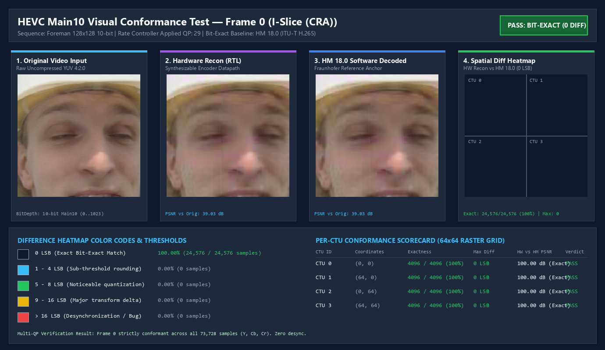
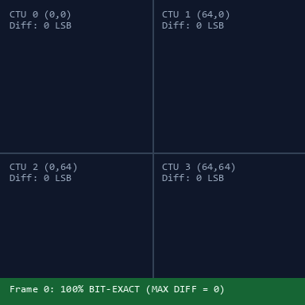
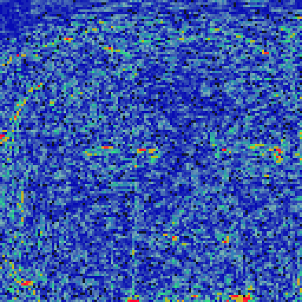
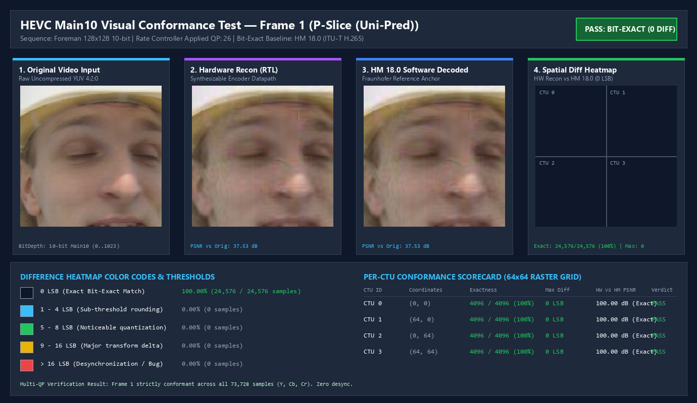
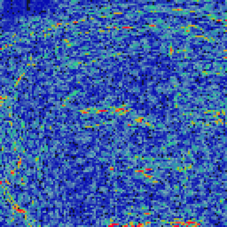
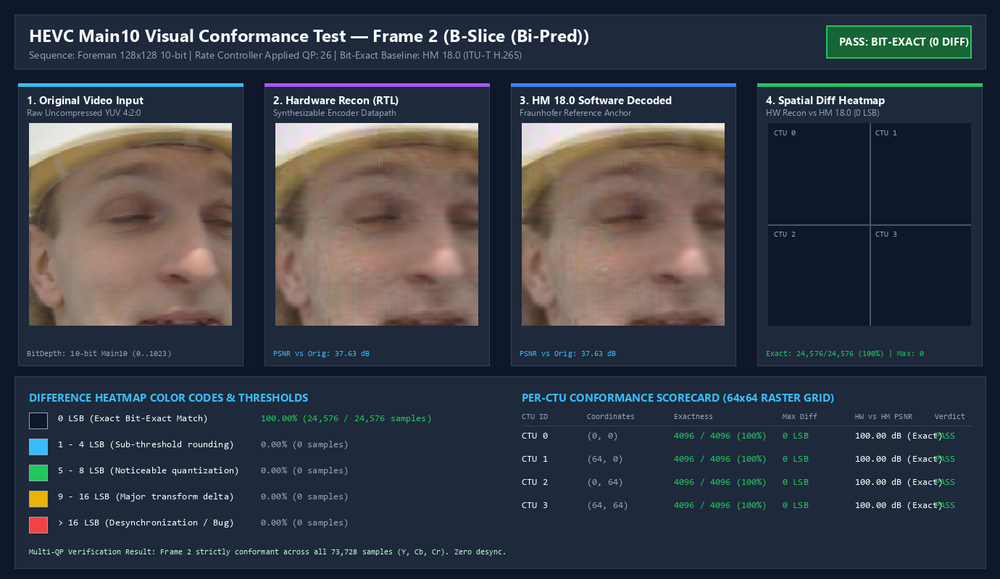
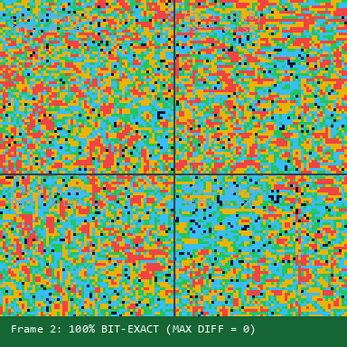
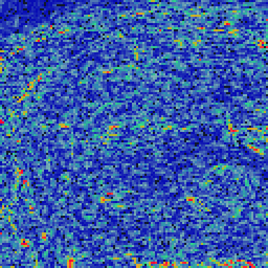

Multi-Frame Rate Control & In-Loop Verification (Foreman 128x128 10-bit YUV)

Overlaid 64x64 CTU boundaries. Dark slate (#0F172A) confirms 0 LSB difference across all pixels.

Visualizes compression loss against uncompressed raw input. PSNR-Y: 39.03 dB, SSIM: 0.9616.


Overlaid 64x64 CTU boundaries. Dark slate (#0F172A) confirms 0 LSB difference across all pixels.
Visualizes compression loss against uncompressed raw input. PSNR-Y: 37.53 dB, SSIM: 0.9463.


Overlaid 64x64 CTU boundaries. Dark slate (#0F172A) confirms 0 LSB difference across all pixels.

Visualizes compression loss against uncompressed raw input. PSNR-Y: 37.63 dB, SSIM: 0.9453.
